Runs 427929 (clean minimum bias, L = 0.4648 ± 0.0103 nb⁻¹) and 428770 (jet-trigger dominated); D⁰→Kπ, D⁺→Kππ, D*±; classifier: tree H at WP70. All results are preliminary and post hoc. Every number on a figure is read by the script from the source file named in RAPORT.md. Layout of the 2D map (F4) follows the ROOT '_margins' plots: map, marginal distributions, nominal-mass lines and a residual panel.
The D⁰→Kπ peak is extracted in three pT bins of run 427929 with yields of 4059 ± 468, 1536 ± 161 and 700 ± 70 and acceptable fit quality (p = 0.24, 0.22, 0.07).
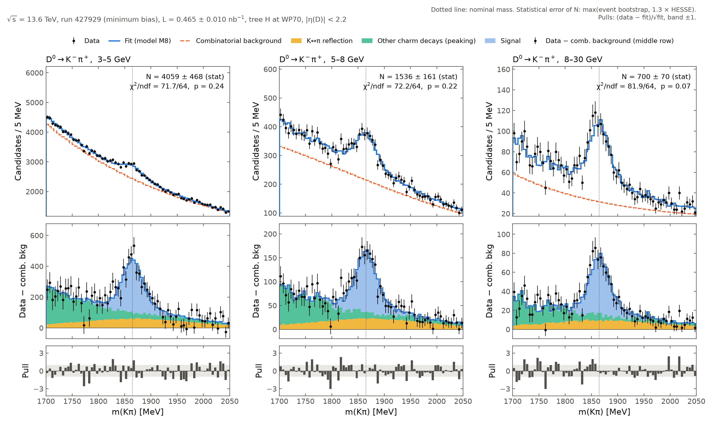
Caveats: Broad components tied to the signal (K↔π reflection, other charm decays) are taken from simulation; the fit has a second minimum at 3–5 and 5–8 GeV (4.6 % and 4.4 %, carried as a systematic). On simulation the fit underestimates the yield at 3–5 GeV by 22 ± 10 %; this is an uncertainty, not a correction. (PDF)
The D⁺→Kππ peak is clean above 5 GeV; yields are 3404 ± 292, 1630 ± 102 and 651 ± 53.
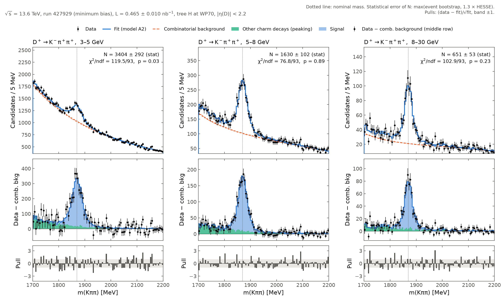
Caveats: Model A2 was chosen by ranking and post hoc; no setting meets the closure criterion on simulation at 5–8 GeV (+9.2 ± 6.2 %), carried as an uncertainty. At 3–5 GeV the fit quality is poor (p = 0.03) and the yield depends on the fitted width by up to 13 %. (PDF)
The cross-sections lie about 0.6 of Pythia 8 A3 above 5 GeV and inside or just above the FONLL band; D⁰ at 5–8 GeV is 3.0σ below CMS at 13 TeV after matching the definitions.
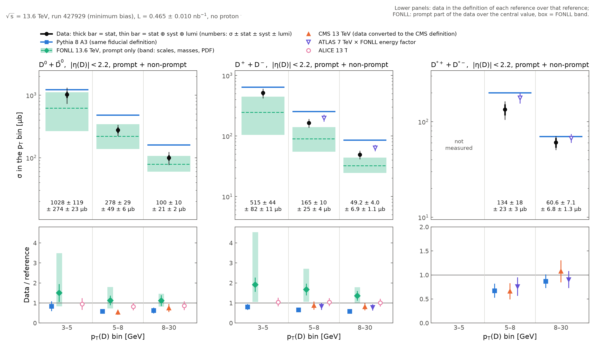
Caveats: Preliminary and post hoc; the tension with CMS is not explained. The ALICE comparison uses reference values that were not re-verified (8 % error assumed). Scale factors of D⁺ and of D⁰ at 3–5 GeV rest on a transfer from D⁰ above 5 GeV; tracking, vertex and luminosity-calibration uncertainties are taken from the literature or assumed. (PDF)
D⁺/D⁰ = 0.50, 0.59, 0.49 and D*⁺/D⁰ = 0.48, 0.61 agree with all references within 1.4σ.
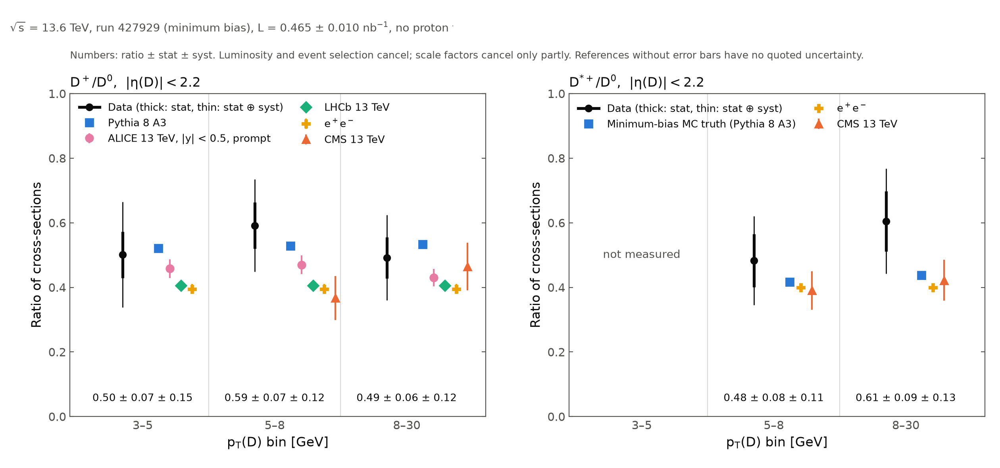
Caveats: The precision (24–33 %) does not separate 0.40 from 0.47. Both ratios sit 0.2–1.4σ above the measured references, which would correspond to a D⁰ cross-section low by 15–30 %. (PDF)
The D*± → D⁰π signal is visible as a correlated excess at the crossing of the nominal D⁰ mass and Δm = 145.4 MeV, without any classifier.
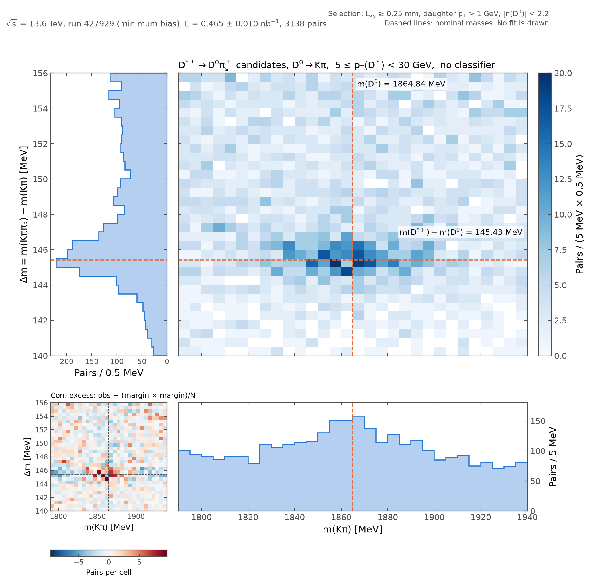
Caveats: Illustration only: no fit is drawn and no yield is taken from this map; σ(D*±) comes from a separate Δm fit. Selection as in that fit but without the D⁰ mass window; pT(D*) 5–30 GeV. (PDF)
The isolation efficiency of true D⁰ agrees with simulation in minimum-bias data (SF = 0.98 ± 0.04) but not in run 428770 (0.51 ± 0.02), so an MC-derived isolation efficiency is usable only for the minimum-bias sample.
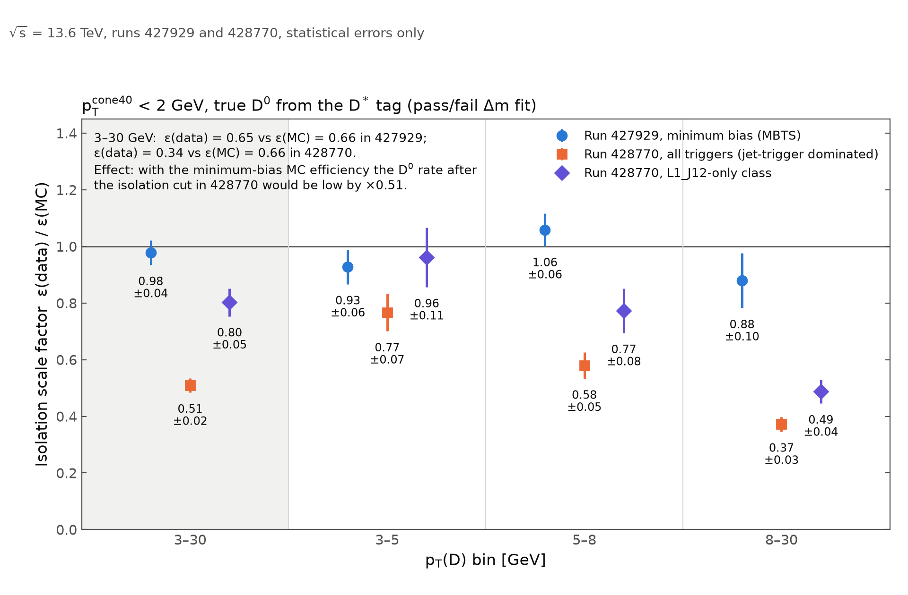
Caveats: Measured on D⁰ tagged by a D*, whose soft pion lies inside the cone: on simulation the 427929 value carries over to inclusive D⁰ within 0.5 %, the 428770 one is model dependent. Statistical errors only; D⁺ not tested. (PDF)
L1_J12 selects only 2–12 % of the events with a D and 70–87 % of the 428770 yield comes from the L1_J12-only region, so run 428770 gives no second absolute cross-section point.
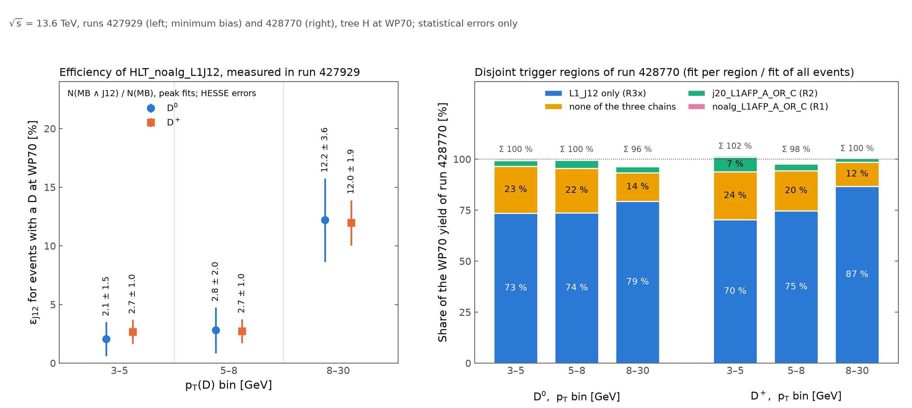
Caveats: The efficiency is known only from run 427929 and with 16–71 % relative error; 12–24 % of the yield comes from events of none of the three chains, with unknown efficiency. D⁰ at 8–30 GeV is fitted with another model than in run 427929. (PDF)
The measurement is systematics limited (totals 16–29 %): fit bias and fit model dominate for D⁰, the classifier scale factor at 5–8 GeV, and literature tracking uncertainties for D⁺.
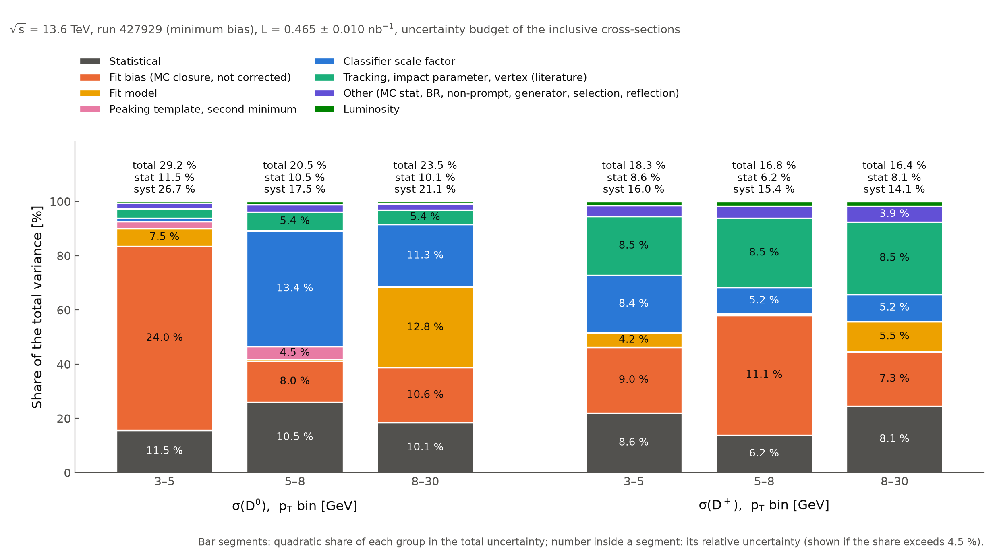
Caveats: The fit bias is the closure on simulation (|b| ⊕ σ_b) and is not corrected. Tracking, impact-parameter, vertex and generator rows are from ATLAS publications, not measured on these data; the 2.2 % luminosity calibration is an assumption. (PDF)
At WP70 the D⁰ background is mostly charm-free combinatorics at low pT and becomes reflection- and charm-related at high pT, while the D⁺ background above 5 GeV is dominated by partially combinatorial charm.
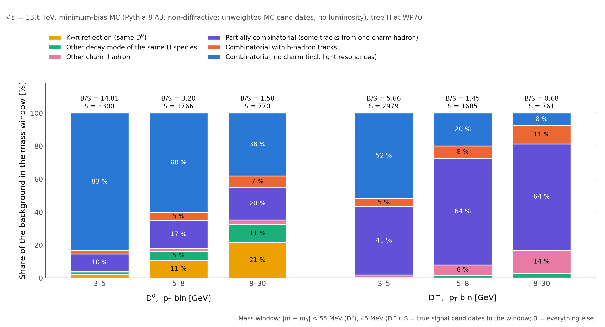
Caveats: Simulation only (minimum-bias MC, unweighted), post hoc with respect to the fit-model choice; the data composition is tested only indirectly through the fits. (PDF)
Masking soft-pion candidates removes the D*-specific efficiency of the network (double ratio 1.37–1.45 → 1.014–1.017); its gain over the tree from the inclusive peak fit is then 0.99 / 1.10 / 1.09 in minimum-bias run 427929 (sideband proxy 1.04 / 1.05 / 1.17), below the pre-set 1.15, and 1.13 / 1.25 / 1.17 in the jet-triggered run 428770 (proxy 1.25 / 1.40 / 1.42).
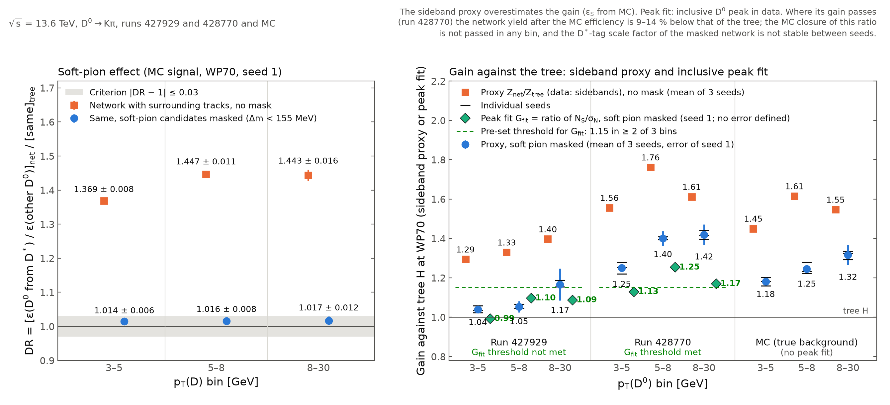
Caveats: The sideband proxy overestimates the gain (ε_S from simulation). The peak-fit gain is from one training seed and has no error, so differences of about 0.05 are not significant. In run 428770 the gain sits in the L1_J12-only class and comes with a network yield, after the MC efficiency, 9–14 % below that of the tree; the closure of this yield ratio on simulation is not passed in any bin, so the ratio is descriptive. The D*-tag scale factor of the masked network is not stable between seeds at 5–8 GeV. The tree H stays nominal. (PDF)
Measurement with the AFP proton tag (run 427929). Figures in local_tagged/.
In run 427929 a D⁰ signal of 54.7 +19.4/−18.7 (stat) ± 12.6 (shape) candidates is indicated at Z = 3.05; a background shape fixed from the untagged sample gives the same result (54.1, Z = 3.05).
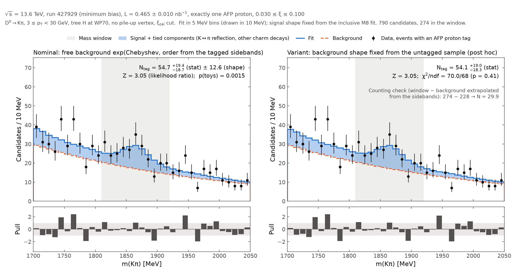
Caveats: An indication at the 3σ boundary, not an observation. The yield assumes that the broad components tied to the signal have the same proportions as inclusively; a counting check (window − sidebands) gives about 30. The variant is post hoc. (PDF)
R^fid = 0.99 +0.35/−0.34 ± 0.28 % and σ_tag^fid = 13.6 +4.8/−4.7 ± 4.6 µb are compatible with the Pythia envelopes and of the same order as the converted literature values.
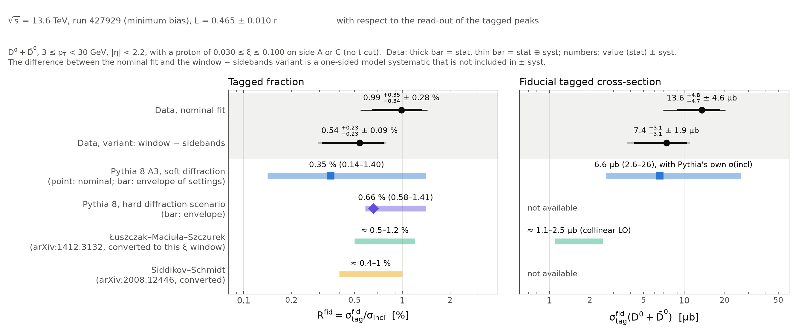
Caveats: Post hoc with respect to the read-out of the tagged peaks. The window − sidebands variant (0.54 %, 7.4 µb) is a one-sided model systematic not included in ± syst; 64 % of the efficiency denominator comes from 3–5 GeV, where the classifier scale factor is a scenario. Literature values are order-of-magnitude conversions. (PDF)